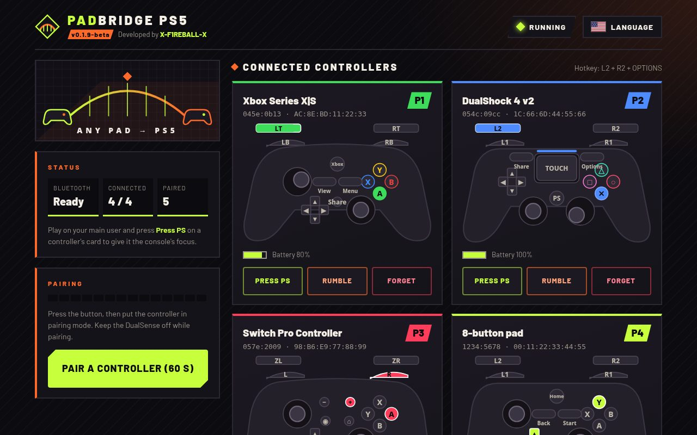
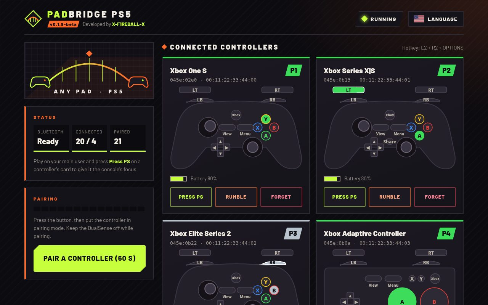
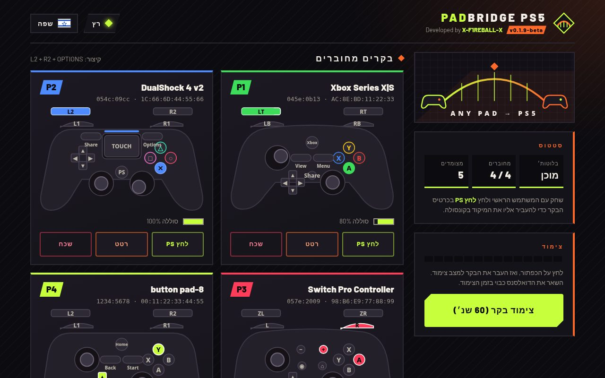

Features
Runs in the background beside the system. It does not modify games, the firmware or the jailbreak.
No dongle
Uses the PS5's own Bluetooth chip, shared with the system: Bluetooth Classic and Bluetooth LE.
Virtual DualSense
Each controller appears to the console and to games as a DualSense. You can connect up to four at once; all of them work simultaneously.
Web menu
Pair, watch live input, forget pads, test rumble and read the log from any phone or PC at :8095, or from the media row.
Automatic reconnect
After the first pairing and one power cycle, switching the controller on is enough. Keys are stored on the console.
Press PS
Controllers without a PS button can still take the console's focus with one tap on the web page.
Eleven languages
The page and the console notifications, including right-to-left Arabic and Hebrew, with the full controller model name.
Tested controllers
Tested on real consoles. Many more are supported in the code and pass the simulator tests; see COMPATIBILITY.md for every ID. COMPATIBILITY.md
| Status | Controller | Details |
|---|---|---|
| Tested | Xbox Series X|S over Bluetooth LE | 045e:0b13 · PS5 firmware 10.20 |
| Tested | DualShock 4 v2 | 054c:09cc · PS5 firmware 10.20 |
| Tested | DualShock 4 v1 | 054c:05c4 · PS5 firmware 10.20 |
| Supported | Other Xbox One / Elite / Adaptive models, DualSense, Switch Pro and Switch Online pads, 8BitDo, GameSir and others | Not tried on a console yet. A generic profile covers any Bluetooth HID gamepad, adjustable with a .map file. |
How to use it
You need a jailbroken PS5 with an ELF loader on port 9021 (elfldr) or Payload Manager, and a phone or PC on the same network.
Prepare
Have a jailbroken PS5 with elfldr (port 9021) or Payload Manager ready, and a phone or PC on the same network as the console.
Load the ELF on port 9021
Download PadBridge-PS5-
.elf from the latest release and send it to the loader: nc -q0 <ps5-ip> 9021 < PadBridge-PS5-<version>.elfor load it through Payload Manager. The console shows a notification with the menu address, and a PadBridge home icon appears in the media row.
Open the PadBridge home icon
After the ELF is loaded, open the PadBridge entry in the media row, or open http://
:8095/ on a phone or PC. Press Pair so the controller blinks fast
Press Pair a controller (60 s) on the page, then put the controller in pairing mode. Do not use the PS5's own Bluetooth search in Settings.
- Xbox: turn it on, then hold the pair button on top until the Xbox logo blinks fast. A slow blink only means it is trying to reconnect.
- DualShock 4: hold Share + PS until the light bar flashes.
- Switch Pro: hold the sync button next to the USB-C port.
First time only: turn the paired controller off, then on
Once PadBridge has detected the controller, power it off, then turn it on again. This is required the first time so it starts working with the stored keys. After that power cycle you do not need to pair again — pairing is saved on the console. After a reboot or a new run of PadBridge, just switch the controller on.
Eleven languages
Pick one with the Language button here or on the console page. On the console the choice is saved so every browser and the notifications follow it. English is the default.
Rumble limits
What works
The Rumble button on a controller's card makes it rumble for 500 ms, to check the link.
Not yet
Rumble sent by games is not passed to the controller. There is no known way yet to read the rumble a game sends to a virtual DualSense.
Screenshots
The web menu served by the console.






FAQ and troubleshooting
The controller is not found when pairing
Make sure pairing mode is on: for Xbox the logo must blink fast, not slowly. Start the search from the PadBridge page, not from the PS5 Settings, and keep the controller close to the console.
It paired, but does not work well the first time
Once PadBridge detects the controller, turn that controller off, then on again. This first power cycle is required. After that, pairing is saved and you only need to switch the controller on.
Do I need to pair again after a reboot?
No. Pairing is saved on the console. After a reboot or a new run of PadBridge, just turn the controller on. You only need the off-then-on power cycle the first time after pairing.
The controller is connected but games ignore it
Turn the DualSense off to play with the bridged controller (hold PS on the DualSense — PadBridge does not turn it off). Use Press PS on the controller's card when the DualSense takes the focus back.
My DualSense got paired by mistake
Reset the DualSense with the small hole on the back (about 5 seconds) and reconnect it with a USB cable. To turn the DualSense off yourself, hold the PS button until it powers down — PadBridge does not turn it off.
The page does not open
Check the address from the console notification (http://
The console says PadBridge is already running
Stop the running copy with Stop PadBridge (advanced) on the page, pressed twice, then load the new ELF.
Where is the log? How do I report a problem?
The log is on the page under Log and in /data/padbridge/padbridge.log. Open an issue with the controller model, console firmware, what worked, and the log.
Does it change my console?
No. It does not modify games, the firmware or the jailbreak. Its files live in /data/padbridge/, and Bluetooth is left as it was when it stops.